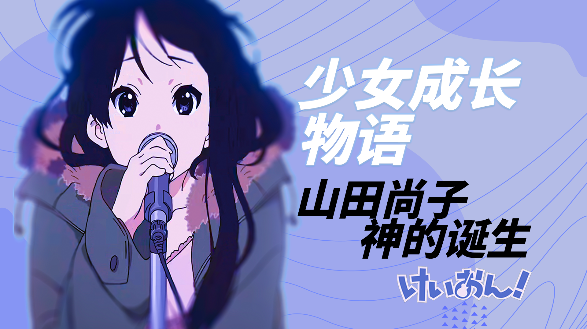

素材：你的颜色，轻音少女tv，NHK山田尚子访谈记录，轻音少女原画设定集，轻音少女NCOP（部分出处不明）
音乐：
1.Amen, I'm Going Somewhere
2.Cagayake! GIRLS
3.SHIROBAKO
4.海の見える街
5.いい夢見てね

杂谈封面展示
创作过程记录视频
简介：这篇稿子写了很久，最早还是在三年前写的，因为被群友翻出来才想起这篇稿子，前前后后修改了不少，正好山田尚子的新电影上映，也算是自己对于青春的一个总结了，很久都没有费这么大的精力来做视频了。音频的录制方面因为设备比较简陋（手机录音），再加上多次补录，导致音色前后有些差异，希望谅解（up声音实在算不上好听，就当听个响吧）
最后感谢@Dorufoc @Azuki咔咔 @牛腩爆炒BGE 提供的封面制作思路